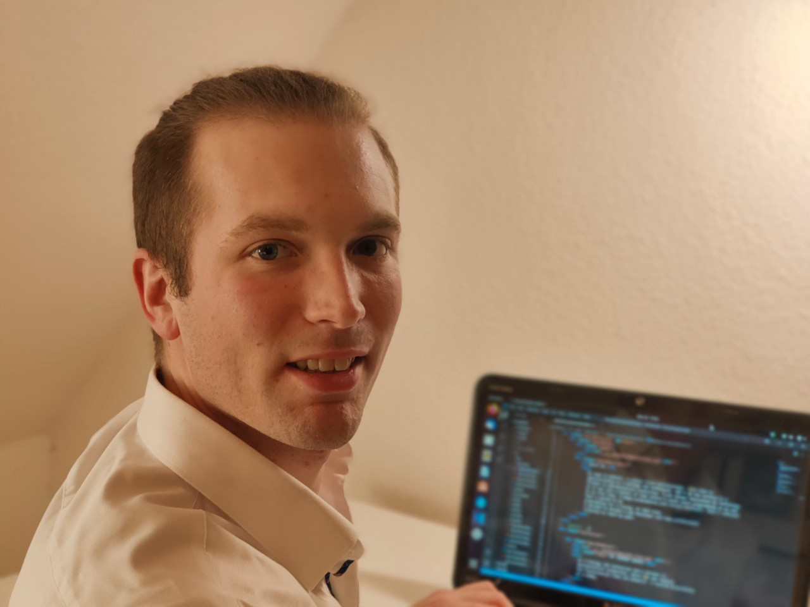

About me.
My name is Dominic, a junior front-end developer. I´ve made an
apprenticeship as a biology lab technician, and I am now working as a
foreman in pharmaceutical production. I was always fascinated by technology.
So it was just a matter of time before I would start programming on my own.
In my free time, I began programming with online tutorials. Soon I realized
that I wanted to do
programming for a living. At that time,
I decided to become a web developer and take professional
training to reach my goal.
 MY JOURNEY BEGAN
as a biology lab technician and a foreman in
pharmaceutical production, where I´m now leading
the fractionation team (10 members). I started programming
as a hobby.
MY JOURNEY BEGAN
as a biology lab technician and a foreman in
pharmaceutical production, where I´m now leading
the fractionation team (10 members). I started programming
as a hobby.
 I WAS ALWAYS FASCINATED
by technologies and the unlimited possibilities.
So it was just a matter of time before I would start programming.
After a short time, I realized that I wanted to do
programming for a living.
I WAS ALWAYS FASCINATED
by technologies and the unlimited possibilities.
So it was just a matter of time before I would start programming.
After a short time, I realized that I wanted to do
programming for a living.
 I SEARCHED
for the right way to gain the experience to become a
professional front end developer.
I SEARCHED
for the right way to gain the experience to become a
professional front end developer.
 I STARTED A PROFESSIONAL TRAINING
where I got all the experience that I
needed besides my work, and soon I was able to build my own projects.
I STARTED A PROFESSIONAL TRAINING
where I got all the experience that I
needed besides my work, and soon I was able to build my own projects.